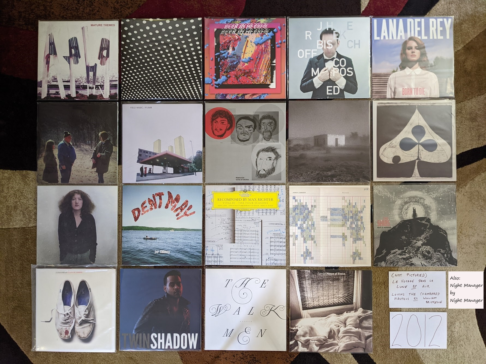
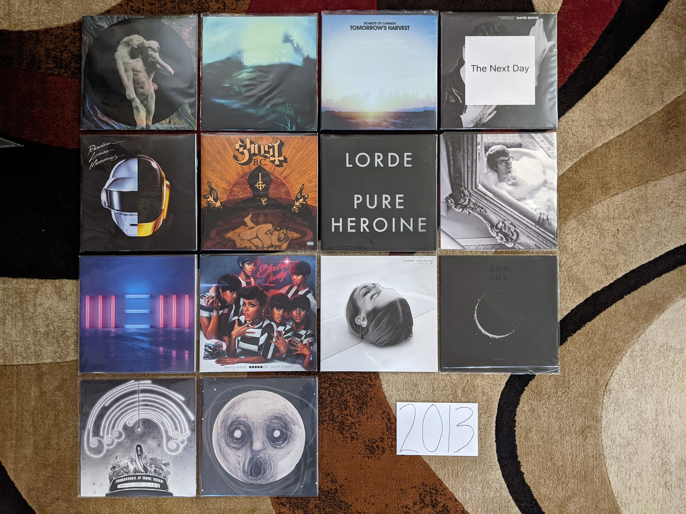

2010s¶

2010s Overview¶
This was an interesting decade for music and for my relationship with music. When it began, we were at the point I like to call “peak indie” where a collection of small labels were releasing the most culturally relevant albums, and the big labels were trying to pretend they were the small labels in order to compete. I was writing for a local music blog, and attending multiple large music festivals per year. These were mostly the (now rare) club festivals that were spread out among multiple small venues over several days. These were the kind of festivals that demanded research and study to attend properly. I loved the process of reading about all the bands, getting ahold of a sample of music, and laying out my plan to rove about the clubs to catch my favorites. The tee-shirts and vinyl records bought from merch stands at these shows are now staples of my wardrobe and album collection today.
When the decade closed, mainstream pop from the major labels had returned as the dominant force in the music scene. This kind of mainstream music had never really gone away, it was more that independent music had receded to the shadows again. I have nothing against mainstream pop, as my lists for earlier decades show. My objections mostly have to do with the impacts of how modern pop music is made. Today, your average pop single is written and produced by a committee of dozens. When that many folks contribute to the creative process it has the effect of sanding every edge off of the track by the time it reaches the finish line. Any remaining distinguishing characteristics are so intentionally created, that it can’t help but feel contrived. I haven’t been to a music festival since 2013. That last one was the inaugural “Crossing Brooklyn Ferry”, a combination of the most high brow indie combined with artists that typically get labeled as contemporary classical. This was my Woodstock, lol. The rest of the decade, 75% of the live music I saw was the local symphony orchestra, This was where “I got old”, but where exactly did it happen?
2010s Stats/Favorites¶
Section started: 12 Aug 2021
Section complete:
Latest update: 26 Oct 2021
Total Albums:
Top Artists:
Favorite album:
Favorite Song:
2011¶
When I listened to my playlist of favorites for this year, I was struck by how many of the releases shared a consistent sound. This was definitely the year of synthpop revival, chillwave and the seeds of vaporwave. 2011 has a distinct sound and I like it. Much of this music was designed to invoke non-specific memories of the 1980s. In retrospect, this music doesn’t really have many direction connections to that decade, but it sure sounds like 2011.

2012¶
This was a great year for music. I often think of this as the very climax of the “peak indie” years. Lots of great stuff being released regularly, and much of it was really pushing the art form forward. At the time, I assumed life would go on like this forever. I didn’t realize mainstream pop was about to become the dominant form, and I didn’t realize how quickly I would start to “get old.” I’ve noticed this is where the documentation process is starting to slow a bit. Partially because my memory of these years is getting fuzzy, partially because I am savoring the process of revisiting the past.
{kind=link}
Le voyage dans la lune by Air - I have been following these guys closely since their first record back in the late 90s. This is might be the closest the have come to the quality of that first record, and I fear that it might be their last release. It is very difficult to make instrumental electric music that can either fade into the background or strongly captivate the listener depending on context, but this is that kind of music. If this is the last one, it was a heck of a way to go out. [Memory: This was the first album on my best of 2012 Spotify list where I captured my favorites as they came out. As a result, I listened to it many times, and it never got old. I don’t think it ever will.]
Mature Themes by Ariel Pink’s Haunted Graffiti - This record was a big step up in production quality for this band. They survive the less lowfi conditions and find a new warmth in the process. Some seriously weird music with totally non-serious childlike themes. Extraordinary stuff. [Memory: Hearing “Symphony of the Nymph” for the first time on a car ride at night, the exact right way to listen to that song]
Bloom by Beach House - Like many people, I was anxiously waiting to see what this duo did after the amazing Teen Dream. The answer was: make an album that was nearly as good, and significantly more refined. I don’t listen to this one as much as its predecessor, but it is another extremely pretty and atmospheric dream pop record that I’m always happy to hear. [Memory: I was almost afraid to listen to this for fear of disappointment. This should never be a concern with this group.]
I Love You, It’s Cool by Bear in Heaven - Their brand of synthpop colored by psychedelic music didn’t last long, but it was great while it lasted. “Kiss Me Crazy” is the best song they ever made, and a distillation of what made them great in a single track. This album might be the most representative artifact of the spirit of experimentation typified by this band. [Memory: Looking at the cover and thinking it was really ugly for such a great record. I was yet to understand the style that would morph into the vaporwave aesthetic.]
Composed by Jherek Bischoff - The short lived “indie classical” era was also peaking in 2012. This record was probably the best effort bringing together pop singers with the conventions of “fancy music school music.” I knew nothing of this project until I heard a performance of it broadcast as part of the Ecstatic Music Festival on Q2 (now defunct, new music sub-channel of WQXR). Listening to new music concerts broadcast on the radio kind of sums up this time of life for me. [Memory: Seeing David Byrne and Amanda Palmer perform tracks of of this record at the Crossing Brooklyn Ferry festival later this year]
Loving the Chambered Nautilus by Wiliam Brittelle - A really bright and cheerful fusion of chamber music and 90s electronic music. In retrospect this fits vaguely into the vaporwave scene that was an underground phenomenon at the time. It also sounds somewhat like the kind of music that would have been in a 90s infomercial.[Memory: At the Crossing Brooklyn Ferry festival, I was sitting in the balcony of BAM watching the band Caveman and William Brittelle sat next to me. He was a somewhat intimidating figure with wild hair and an outlandish sense of style. I moved seats.]
Born to Die by Lana Del Rey - I liked the big single “Video Games” but it took a while for me to warm up to this record. It really wasn’t until her stunning second record came out that I came back and appreciated what was going on here. This hip hop tinged music is very far from where she is now, but much of it still really works, especially the outstanding “Summertime Sadness.” [Memory: This album caused quite the stir at the music blog I was contributing to at the time. The general sexism and focus on style over substance from the blog owners is what drove me away.]
Swing Low Magellan by Dirty Projectors - Feels a bit like Bitte Orca* Pt II, and I have no problem with that at all. The central partnership in this band produces another solid winner. The high water mark in white bands trying to create soulful backing vocals, but creating something completely different (that is also pretty OK). [Memory: This was the first time I struggled to get a new album release on vinyl, and solid evidence that many other folks were also buying records again.]
Plumb by Field Music - I have no memory of how I became aware of this record. This is one of those bands I was very aware of but had never checked out. Fits in really well with all the chamber pop and indie classical stuff I was into at the time. Reminds me a little of ELO (in a very good way). A very prog rock spirit to this record. For some reason I have never explored their other music. [Memory: I remember this album being a landmark decision point for me. Was I going to buy all my favorite new records on vinyl? Thankfully I decided on yes.]
Matricidal Sons of Bitches by Matthew Friedberger - Without his sister to temper his more experimental tendencies, the other half of The Fiery Furnaces* made some truly odd, minimalist music. This is strange, repetitive stuff, but I love it for some reason. This takes the most interesting ideas of the Solos project and expands it into a super interesting double album. [Memory: I remember playing the “organ album” from the Solos project (the obvious direct precursor to this album) to a room full of classical organ people who crashed a party at my house. I for some reason wanted to offend their sensibilities with music that I knew wouldn’t fit their taste. There was no reaction.]
Allelujah! Don’t Bend! Ascend! by Godspeed You! Black Emperor - How long was I going to enjoy what this over the top apocalyptic post-rock band was up to? Exactly this long! Not remarkably different than what had come before, but different enough for me to enjoy. I’ve tried the record that come later, but I feel like this is exactly the amount of Goodspeed I need in my life. [Memory: Seeing this band play on this tour at the Town Ballroom in Buffalo was an amazing bookend on my relationship with this band.]
Shields by Grizzly Bear - It was hard to appreciate while it was happening, but this band has been getting progressively better on each of these records. The one-two of “gun-shy” and “Half Gate” summarizes my favorite qualities of the “fancy psych” that these guys specialize in. [Memory: I remember listening to this album repeatedly on a road trip back to the SE Pennsylvania area in late ‘12]
A Church that Fits Our Needs by Lost In the Trees - There were a couple bands that got a notable boost from the NPR program “All Songs Considered” in the early 2010s, and that included this act. I doubt they would have had a chance to make such an ambitious, sprawling record without the spotlight from the folks in DC. They still are making a lot a sound with clearly only a few musicians. The songwriter/leader of this band gives the impression of using duplicating effects and overdubs to piece together an approximation of an orchestra. Its not perfect, but very effective. [Memory: “Garden” is probably my favorite song from this year, and I have listened to it hundreds of times since]
Do Things by Dent May - I saw this guy back in his “magnificent ukelele” phase, as the opening act for AC Newman at the Noise Pop Festival 2009. It was kind of silly music, but there was a clear songwriting talent there, with a great sense of humor. By the time I saw him open for another act in 2011, he had cleaned things up as the front man for a slick indie-pop outfit that reminds me a little bit of XTC (and the also the Love Boat for some reason?). Fun summer music. [Memory: When I saw the band in 2011 I ran into May in the bathroom after their set. There was a super awkward moment when I told him how much I enjoyed the show as we both stood at the urinals. Nice guy.]
Night Manager by Night Manager - When I think of peak indie, I think of this crew. They took all the elements of early 2010s indie rock and turned them up to 11: reverb, surf rock rhythms, shouted distorted vocals, angular guitars, and a sense of adventure. This is some fairly avant garde, it is a shame they only lasted a few years in mostly obscurity. [Memory: This was one of the few things that I discovered from one of my fellow writers at the music blog. They actually played at BugJar the club right down the road from me, but alas I didn’t go.]
Recomposed by Max Richter - OK, this project has few rules, but I said no pure classical music. I’m gonna claim this is made with a rock and roll spirit. I mean, I hate Vivaldi’s Four Seasons, and this turns it into something I love. This is a classical remix, and a great one. The addition of the minimalist repetition and post-rock soundscapes really transformed this into something amazing. [Memory: I remember streaming a concert video premiere that Q2 (RIP) broadcast from the Greene Space in NYC. The violinist was wearing sneakers, so it’s totally rock and roll and legal for this project.]
Port of Morrow by The Shins - No one does straight ahead indie-pop quite like The Shins. A perfect pop record, perfectly produced and little more to say that that. [Memory: I think this is the first thing that I ever discoverd from Spotify radio. I had given up on this band a bit after their third record, but one listen to “Simple Song” and I was back onboard]
Reign of Terror by Sleigh Bells - I was OK with their much hyped first record, but this is where they really get going for me. Much more ambitious an interesting than the monotone Treats. The perfect combination of sweet and loud. Obnoxious in the good way. [Memory: I saw them on the tour for this record at Water Street and it was a big disappointment. They just can’t replicate their sound very well in the live setting.]
Confess by Twin Shadow - A much more refined record than his first one. I really miss the raw haziness of the first record. This is really enjoyable, but it was the start of a move away from what made this act great. [Memory: Standing in the orchestra pit for his performance at Crossing Brooklyn Ferry]
Heaven by The Walkmen - One of my favorite bands makes their (most likely) last album. There is a message here about growing up and getting old. Like me, they were just turning 30. The whole indie movement seemed to realize that it was aging, and so did I. [Memory: Co-incidentally these guys were next on after Twin Shadow at Crossing Brooklyn Ferry. I saw them for the last time in the front row in the orchestra pit. Great show, and I finally got a vinyl copy of their first album at the merch stand after.]
House of Baasa byh Zambri - Can a band that only has one album (and an EP) be one of my favorite artists? I think so. This is such unique music, constructed mostly from layers of distorted vocal tracks. Definitely fits in well with the darkwave revival thing that was going on, but with a unique character that is all its own. The kind of music that could only be made with two sisters who shared a room for most of their life. [Memory: I remember seeing them as the first band on a three band bill at Music Hall of Williamsburg in fall 2012. I miss being the kind of person who wanted to see the first band in a three band show. Also, it was cute seeing dozens of members of the Zambri family make a big fuss over the sisters after their show.]
2013¶
This is probably the last year in my life where my musical taste will be anywhere close to “on trend.” It was the last year that I attended a music festival, and it was the last time I got excited about a new mainstream pop artist. This is the end of my youth.
{kind=link}
Reflektor by The Arcade Fire - This was the highpoint for one of the most important acts of the indie era. It isn’t their best record, but it is the band executing perfectly at the peak of the time in the popular consciousness. I felt so smart for having listened to them since 2002. ;) [Memory: The marketing push for this record was huge. I remember a high profile performance on SNL and a bunch of social media things. This was indie’s peak.]
Until In Excess, Imperceptible UFO by The Besnard Lakes - There are a lot of husband/wife indie bands operating out of Canada. These guys are a hidden gem in the genre. I don’t know why I stopped paying attention after this, which was the third great album in a row. I think it is because they stuck with the same noisy post-rock meets dream pop formula and I didn’t feel like I needed anymore than I already had? [Memory: When I made this list, I remembered that I really liked this album, but not much else]
Tomorrow’s Harvest by Boards of Canada - I kind of hope we never get another record from these guys. I want their catalog to be bookended by two mysterious masterpieces. Without question I have listened to this record the most out of any from this bunch. [Memory: This is exactly the kind of thing I want to listen to first thing in the morning, and I have dozens of times]
The Next Day by David Bowie - I was very much a fan of millennial Bowie, and I love 90s Bowie. This was the album that finally got the critics and the general public back on board the Bowie train. In retrospect, I’m not sure what made this better than something like Heathen, perhaps it was just marketed better. That said, it is another extremely solid record to close out a sequence where he was exploring his past sounds. [Memory: At the time I assumed this was the beginning of another string of successful Bowie records, but he would disappear again, and it would not work out that way]
Random Access Memories by Daft Punk - This will be the last release to win the Album of the Year Grammy to appear on my list. I say this not just because of my “getting old” but because of trends in popular music that I do not expect to ever significantly change. The way this walked a tightrope between indie electronic and mainstream pop is masterful. One of the most deserving albums to ever win that award. [Memory: I was at the headquarters of the company I worked for at the time, and I heard someone humming “Get Lucky” at the photocopier. I felt hip for being in line with prevailing pop trends for once.]
Sticky Wickets by The Duckworth Lewis Method - Neil Hannon makes a second record about cricket with his collaborator. It’s not quite as good as the first one, but still way better than it seems like it should be. The best track is “Judd’s Paradox” which revisits the concepts and themes from the first album regarding social class and cricket, and recycles the melody from a Divine Comedy record released only a few years prior. [Memory: It was shocking to learn there was not one, but two solid concept records about the sport of cricket]
Infestissumam by Ghost - When I discovered this band, this was their newest release. It was their weakest record then, and still is. I almost have this on my list solely for the prog metal epic “Ghuleh/Zombie Queen” which is pretty much the only song from this record they bother to play live at this point. [Memory: Back when this was the new Ghost record, I took it as a sign that they were not going to have staying power. I was wrong about this record, I was wrong about the band.]
Pure Heroine by Lorde - Around this time I was attending the “Alternative Music Film Series” at the Memorial Art Gallery, and they would play videos for recent alternative hits before the feature. It was in this context that I heard “Royals” for the first time, and I was a bit embarrassed by how much I liked it. It didn’t seem like the kind of music I should be in to. Time would show that Lorde was very much the kind of music I am into. [Memory: “Team” will always be my Sunday morning Wegman’s jam]
Warm Blanket by Dent May - For a very brief moment this guy found an interesting XTC meets lounge singer sound that was indie pop gold. I can’t get into his new stuff, but this record is what I want to hear when I am sitting on the porch sipping a cool beverage. [Memory: I was really excited about the sound of this record, and was very sad that he would soon move on from this]
New by Paul McCartney - Beatle Paul starts paying attention to indie and attempts to integrate what he sees into his own music. This has virtually nothing to do with 2010s indie, but it is stunning. “Queenie Eye” is an especially fresh and quite unexpected single. This the start of an ambitious, if inconsistent late career push. [Memory: It was startling how fresh and vibrant McCarney seemed all of a sudden when this record came out. We were only a few years from that horrid covers record.]
The Electric Lady by Janelle Monae - It’s a huge bummer that we will never get a proper end to the Cindy Mayweather epic. Monae has clearly gone in a different (mildly disappointing) direction. This record does an amazing job balancing modern pop idioms with dozens of ideas from the past. I really wonder if we will ever see anything like this again. [Memory: The Prince estate has continually allowed and disallowed streaming of the track “Givin’ ‘Em What They Love” which features the purple one. This is a shame because it is a hell of a way to start the record.]
Trouble Will Find Me by The National - In retrospect High Violet was a massive pivot for these guys, and every record since has been the same low key collection of dirges and love songs. It never feels as samey as it should because it is so textured and delicately beautiful. “Pink Rabbits” is the definitive track from this era of the band. [Memory: This is the album when I finally allowed myself to be a sensitive indie bro National fan]
Lanterns by Son Lux - By far the most accessible record by Ryan Lott, and that was a smart move. After the visibility his friends at NPR provided, this was the record that built the fan base that would sustain his art rock endeavour. “Lost It To Trying” was a clear effort to write a pop single that totally worked out. [Memory: I was mildly ashamed of myself for liking “Lost it To Trying” because it indulged in the “Woah-oh-oh!” chorus trend that was a cliche of mainstream pop in those days]
The Raven That Refused to Sing (and Other Stories) by Steven Wilson - Wilson was in the process of producing remasters of the King Crimson discography when this album was made, and it shows. This is the kind of jazz influenced “heavy prog” that Crimson were up to in the early 70s. [Memory: The cover of this album will always remind me of Lakeshore Record Exchange, a record store that was walking distance from my first apartment in Rochester. They had a special edition LP of this in stock for the last five years of their existence.]
Uzu by Yamantaka//Sonic Titan - I discoverd this record while preparing to attend the 2014 Polaris Music Prize Gala in Toronto. For several years I had been streaming the gala online and had enjoyed the window it gave me into the wildly experimental indie scene of 2010s Canada. It was a remarkable time for Canadian music, and this band were one of the most out there acts. They didn’t win or even perform at the ceremony, but this was the pick of the litter for me. This is theatrical, progressive metal that manages to never feel cheesy, and was a real breath of fresh air. [Memory: Seeing this band perform at the 2012 Polaris Prize was incredibly memorable]
2014¶
This is it folks, the year “I got old.” I do feel like I made an attempt to explore the new releases, and keep in touch with what was being covered in the remaining indie music blogs. This is the last year I kept a Spotify playlist of the things that I streamed for posterity. Interestingly, I feel like this is also the year that indie music took a big hit in popularity and more mainstream styles returned to prominence. That said, this is still a pretty great set of records.

Everyday Robots by Damon Albarn - A delightfully minimalist record that feels like a variation on his other project The Good, the Bad, and the Queen, this is what Albarn does best. “The Selfish Giant”” was probably my favorite song from this year. He doesn’t get enough credit for his inventive piano playing. [Memory: I remember being disappointed by most of the new music I was hearing this year and latching on to this record in a very strong way]
Unrepentant Geraldines by Tori Amos - This is where she entered into that career phase where every album is perceived as a comeback. That probably says more about the press and the general public not paying attention. Those in the know, understand that there has only been on sub-par Tori Amos album. That said, this is return to a smaller kind of songwriting, that was a clear effort to do something different. [Memory: The record scared me a little at release, as Tori felt like she was aging for the first time. It was as much about me as it was her. Then I realized that Tori was showing her age only for effect. Her voice was becoming weathered in a way that could be used for color. It was just another tool in the toolbox.]
pom pom by Arial Pink - It seems like everyone is converging on this being the best release for this guy. It certainly is the most extreme specimen, and that probably does make it the best. This is not subtle music. “Picture Me Gone” is such a beautiful song and a relevant critique of social media culture. [Memory: This album was a bit much for me when it first came out, it took years for me to warm up to it.]
Our Love by Caribou - Another solid, understated electronic record from Dan Snaith. I know this kind of music is still being made, but not nearly as well as it was done here. [Memory: Pitchforks glowing review of this actually made me not listen to it at first. That’s the way it was in those days.]
Ultraviolence by Lana Del Rey - I didn’t take Lizzy Grant very seriously until this record. I know that the production is what is pulling me in, but there is some serious songwriting here as well. This was shocking at the time, but it makes complete sense in retrospect with the sequence of fantastic records that would follow. “Brooklyn Baby” is such a great diss track aimed at the New York City hipster culture that rejected her. [Memory: Hearing the instrumental second bridge in the title song for the first time was startling. It was so beautiful and interesting.]
Keys by Hooray for Earth - This band had a very brief but highly productive run. Only 3 years after their debut EP they released their finest work here. The big guitars, the strong melodies, the delicate vocals, the judicious use of electronics, and the slick production that sounds increasingly like Toto. One of my favorite bands of the late indie era, and their breakup almost was a signal that time was over. [Memory: These guys always had a great promo video for the first single on a new record, and “Keys” really got my attention]
The Ambassador by Gabriel Kahane - A concept album about his former home of Los Angeles. This was the record where Kahane replaced Sufjan as my favorite maker of “fancy folk music.” He is almost going prog here on “Empire Liquor Mart.” The song “Villains” is great comic observation about how movies and other media distort our perceptions of reality. [Memory: When this got pressed on vinyl, I realized that the format was truly back]
Black Hours by Hamilton Leithouser - When The Walkmen one of my favorite bands of the indie era went on permanent hiatus I was bummed. I’m glad this guy kept making music that was very in line with the sound of his band, but with a mature sounds for his aging fans. This is a logical extension of the strings and horn sound of the late Walkmen records. [Memory: Hearing one of my favorite rock artists make this kind of music made me realize we were both getting older]
Love Letters by Metronomy - The Metronomy records can be organized into two groups: The understated half-instrumental soundscapes, and the quirky pop collections. This one is strongly in the latter class. “Reservoir” has become one of their trademark songs, but it is only one of many pop gems here. [Memory: I don’t know why, but I didn’t really “get” the band until this album, which is one of their less popular]
This is My Hand by My Brightest Diamond - A transition work between the chamber pop that came before and the dance worthy tracks that would be next. It is also the line between the woman who was Shara Worden but would become Shara Nova. [Memory: I saw Shara for the last time on this tour. It was a fantastic show in a small venue in Toronto]
In Conflict by Owen Pallet - The record where he perfected the formula that was started with the Final Fantasy records. While the music is feeling more refined and perfected than ever before, the lyrics are a stunningly transparent account of someone who is really struggling. [Memory: I’ll never forget seeing the artist perform “The Riverbed” at the 2014 Polaris Prize Gala]
2015¶
I turned 35 in 2015, which sounded very old at the time. My relationship with music was also making me feel old. I saw three bands this year: The Psychedelic Furs, The Church, and The Chameleons. It was the year of 80s nostalgia I guess. I was very much treading musical water, keeping in touch with the artists that hadn’t let me down in the past. That ended up working out really well in 2015, as several of my favorites released their best work.

Depression Cherry by Beach House - This was when the world caught up with what I already knew, these guys are one of the best bands currently working. It is a little strange that dream pop made by two people with fairly minimal instrumentation and fairly consistent production techniques has had such staying power. This is great record, and “Beyond Love” is my most favorite song of theirs among many favorites from them. [Memory: For some reason I had convinced myself before I hear it, that there was no way this was going to stand up to their earlier work. Wow, I was wrong.]
Thank Your Lucky Stars by Beach House - Now, releasing two records after one another was some serious flexing. In my opinion, this one is even a little bit better. It certainly is a bit brighter in a way that I like. [Memory: Hearing that this existed and was the leftovers from the first album they made this year, and thinking there was no way it could be great. Wow, was I wrong.]
Girls in Peacetime Want to Dance by Belle and Sebastian - Very solid an enjoyable, but the kind of record that made me wonder how much more they could milk the sound they had been working for the last decade plus. Sarah Marin’s vocal contributions continue to carry the band a bit at this point. They needed to change after this, and they did. [Memory: When I played the first song on this record the first time, I realized it was the end of an era for these guys.]
Honeymoon by Lana Del Rey - A very mellow left turn for Lana, this wasn’t perfect by any means, but it was an important step in a different direction that she still is on as of 2021.
Meliora by Ghost - This is the record where the formula came together in a big way. It is amazing how something so satirical can also be such seriously great music. “He Is” is such a beautiful and stunningly produced mockery of christian rock. [Memory: One of the most fun shows I have ever been to in my life was seeing them at the Rochester Main Street armory on this tour]
Have You In My Wilderness by Julia Holter - I have had a strange relationship with this record. I was exposed to the song “silhouette” by Spotify radio soon after it came out and loved it. I listened to only that song for years and never sought out the record. When I finally heard the whole album and loved it, I never checked out any of her other releases. I don’t know why I am approaching this artist so cautiously. This is the kind of conservatory trained musician making complicated but highly melodic music thing that I love. Maybe someday I listen to something else she has done. Memory: I’ve streamed the song “silhouette” on Spotify more than almost any other song in existence]
Bones by Son Lux - NPR’s “favorite son” recruits some permanent members and becomes a real band. It was the best thing to ever happen to this project. This is nerd rock at its finest. A very strong concept record, this one to listen to from beginning to end. Still my favorite of theirs. [Memory: I saw them at the Warhol after this record, and that was the right kind of place to see this museum on the tour adventurous art rock.]
Carrie & Lowell by Sufjan Stevens - I think there is a prevailing opinion that this is Sufjan’s finest work. I’m glad he made this record so that the general public can understand the brilliance of this man, but I’m far happier that he immediately returned to making the weird stuff I like way more. Still a fine folk record with that Sufjan magic, but a bit too conservative to stand with his best work. [Memory: I almost didn’t buy this on vinyl as it just wasn’t “my kind of Sufjan” but I decided it has its time an place (and a place in my collection)]
Multi-Love by Unknown Mortal Orchestra - They finally got it all to work together here. The delightfully funky electronic sound they occasionally got to work on their first two releases comes into focus here. Such a great sounding production as well, even though I’m pretty sure this is an analog home recording made in that little studio on the cover. [Memory: It took a while to realize I loved this whole album because I liked the first track so much, I never got to the later stuff]
Hand Cannot Erase by Steven Wilson - A mellow prog rock concept record about an isolated person dying alone. Obviously intended to be sad and haunting, but also exceptionally beautiful. Feels like a massive upgrade to the Stupid Dream/Lightbulb Sun era Porcupine Tree. [Memory: Every now and then an album becomes a running playlist favorite despite not being in the typical genre for exercise. This is one of those for me.]
Vespers for a New Dark Age by Victoire and Missy Mazzoli. The first Victoire record was a classically trained composer creating a rock band to make a very unusual kind of prog rock. This album is the composer using that band to play a contemporary classical work. In a way this albums felt like the end of “indie classical” and while I liked to scoff at the idea of the genre, it was a real and compelling thing for a while. The remix of “A Thousand Tongues” by the very much not a classical composer Lorna Dune feels like the last glorious moments of the spirit of classical music nerds forming rock bands. [Memory: I remember tweeting my enjoyment of the “A Thousand Tongues” remix and I could tell the artists generally appreciated the support]
The Epic by Kamasi Washington - This is the most recent of my favorite albums that I do not own on vinyl, but easily could if I wanted to. I think it says a lot. I really like this triple album of modern jazz fusion, but I like his next record even more. There is nothing here that makes me need to own another quite epic release on vinyl, but I spin this one on Spotify often. The texture of this music is exceptional. [Memory: Hearing this and realizing what a consistent artist Washington is]
2016¶
A significant portion of the music from this year was actually discovered during my attempt to reconnect with pop music in the following year. The other albums are all from established artists that I had be following for years. I’ll remember this year mostly for the passing of three of my favorite artists: George Michael, Prince, and David Bowie.

Blackstar by David Bowie - It is difficult to think about this record outside of the context in which it arrived. My pre-ordered copy showed up in the mail two days after Bowie, my favorite musician had died. It was so mysterious and exciting, but it was also the end of the story. Pop’s ultimate performer had one last grand statement on the world stage, the big exit. Experimenting with new sounds until the very end, it is hard to imagine there will ever again be a musician who is both this massively popular and yet committed to pushing the boundaries of pop music. [Memory: I used to spend time thinking about what it would be like when my favorite artists started dying, it happened so fast it almost doesn’t feel real]
Foreverland by Divine Comedy - In my opinion, this is the weakest of the Divine Comedy records released to date, but it is still among my favorites. Neil Hannon feels very content here, and I think it is reducing some of the tension and contemplation that have made his previous work great. I actually own two vinyl copies of this, since my first one is signed by the artist, but I had to buy the reissue because Hannon’s liner notes are that good. [Memory: When it became apparent I would own all the classic Divine Comedy albums as vinyl reissues, I panic bought the only copy of this in the United States on Discogs]
The Hope Six Demolition Project by PJ Harvey - In 2016 we finally got the PJ Harvey saxophone record we had been waiting for. This record somehow feels like the capstone on what Polly has been up to for the last decade with her younger voice and harder sound rejoining her contemplative, social justice minded songwriting. I love the crazy aesthetic for this tour with Polly Jean dressed up in feathers playing in a chorus of saxophones. [Memory: I really wanted to travel to the UK to see the recording of this record which was presented in public as an art exhibition]
King by We are KING - This was the record that brought my attention back to modern pop music. I have an annual tradition of watching the Grammy awards ceremony. Most years I hate nearly everything, but I like to stay in touch with what is going on in pop. I heard a snippet of “Red Eye” from this record during the presentation of the award for the “Urban Contemporary Album of the Year”. This would put me on a path of exploration in what we now call “Alternative R&B” that continues to today. [Memory: I keep watching the Grammys hoping it will help me find other amazing music like this, so far not happening]
X-Communicate by Kristin Kontrol - Kristin Gundred is a masterful mimic of the music of the past. Starting with her band Dum Dum Girls she excelled of mining the past without sounding totally derivative. Her first solo record manages to borrow liberally from late 80s Kate Bush, and 2010s synth pop, while adding just enough to stand up totally on its own. I really hope there will be another record from this project. [Memory: Being surprised that music like this was still being made, and getting high ratings from the likes of Pitchfork]
I Had a Dream That You Were Mine by Hamilton Leithouser and Rostam - This record ended up sounding like the combination of The Walkmen and Vampire Weekend that it seemed like it would be on paper. This is aging hipster music done right. [Memory: A person on a social VR platform (AltSpace) playing this for me excitedly, and dying under mysterious circumstances days later]
Mass Gothic by Mass Gothic - In what was a big theme to my middle 2010s, this album is some of my favorite artists of the previous decade moving on to their next project. In this case, the husband/wife duo from Hooray for Earth and Zambri teaming up to make some delightfully poppy noise rock. “Every Night You’ve Got to Save Me” is a stunning single that shows off what these underrated musicians can do. [Memory: The mixed emotions of a great new band, but the loss of two that were a bit better]
blond by Frank Ocean - A stunning concept record by one of the best artists working today. My vinyl copy of this record is an amazingly made bootleg, because the real thing is worth over 400 bucks these days. Ocean seems intent on only being so popular, almost choosing artistic relevance over fame. It is hard to argue with the results. “Nights” might be the best song of the last 10 years. [Memory: Actively seeking out a bootleg for the first time to have a physical manifestation of one of my all time favs]
Tigarello by Phonte and Eric Robertson - Nothing says where my head is at these days than this album of rap songs about the bliss of monogamy and settling down. Hip hop for rapidly approaching middle age. [Memory: This album makes me feel really old, and I don’t care]
Jessica Rabbit by Sleigh Bells - These guys are making some great tunes completely under the radar. I wish the hipsters that were buzzing about this band at the start of the decade were still paying attention. This is some surprisingly complex, rocking stuff. [Memory: ]
2017¶
In 2017 I made a specific effort to pay more attention to modern music. Admittedly, I wasn’t trying very hard and my efforts were mostly about using the discovery features of Spotify. This did yield some fruit (particularly in the R&B renaissance that was going on) but this year is still mostly comprised of artists from the early century indie boom that I had been following for years.

Unplugged by A-ha - This is certainly the outlier here, a very 90s kind of performance from a very 80s band. I had heard for years about how A-ha were way more popular in Europe and how they were much better than the one hit wonder they were here. The Spotify algorithm decided I needed to her this, and I’m glad it did. The understated arrangements really show off how great their songwriting is. I’m a huge fan now. [Memory: I used to listen to this on repeat while painting D&D miniatures]
Native Invader by Tori Amos - After her previous record I had assumed that Tori was going to make much smaller and more subtle music in her later career. This record certainly proved me wrong on that. A return to her late 90s glory years, this album is a very big sounding, and at times straight up rocking. This isn’t Choirgirl, but it isn’t too far from the best of Venus. Geraldines scared me a little bit because Tori was starting to sound a bit older. This record makes it clear there are many exciting records yet to come. [Memory: Realizing that Tori was going to keep doing what Tori does for a long time, and feeling happy]
Dedicated to Bobby Jameson by Ariel Pink - Yes it breaks my heart that he has been outed as a terrible person, and I can’t imagine I’ll be keeping up with his career going forward. That said, these records are stunning works of outsider brilliance. If I’m going to keep records by people like Michael Jackson on this list, there is room for the work other deeply flawed artists. [Memory: Enjoying the very dated sounds taking me back to the glory days of this kind of thing around 2010]
Lust for Life by Lana Del Rey - It is her weakest record thus far, but still among my favorites. The whole thing is a little to mid tempo monotonous, but there are still some stunners here, including the title track. The outstanding production values of the record really puts this one over the top. [Memory: This is essentially the background music of this era of my life]
Dirty Projectors by Dirty Projectors - While this project existed before and will continue after the musical (and romantic) partnership of Dave Longstreth and Amber Coffman, I doubt I will ever enjoy the records made by those other incarnations nearly as much. The exception is this Longstreth solo effort that serves as a document of the dissolution of that central partnership, and a compelling bookend to an amazing run of records. [Memory: I heard this album before I knew anything about the breakup, but I didn’t need to hear the story from the indie bloggers to know what was up]
Jardín by Gabriel Garzón-Montano - 2017 was the year I discovered what is now called “Alternative R&B”. An ambiguous genre, to me it feels like a return to what Stevie Wonder was attempting to to in the mid-70s. This record especially feels like the kind of thing Stevie would have come up with if he had been born in the 90s. [Memory: This was the golden era of Spotify recommendation radio for me, thanks Spotify!]
Painted Ruins by Grizzly Bear - Some bands are constantly changing and trying new sounds, others like Grizzy Bear, started with a fully developed sound and have been gradually perfecting it. I’m curious how many more albums of this same general formula I will tolerate. “Losing All Sense” is getting pretty close to the ultimate implementation of this kind of music. [Memory: I actively avoided the record thinking they had lost the sound I loved, and yeah I was wrong about that]
Choir of the Mind by Emily Haines - Metric is a fine band, but Haines solo work is on a completely different level. We seem to only get one classic album a decade from her, but maybe that is why the level of songcraft is so high. A gorgeous set of songs mostly about the artist and her piano with just enough atmospheric electronics and vocal overdubbing to create a pleasant warmth. [Memory: I’ve listened to “Legend of the Wild Horse” so many times, I know I’ll never tire of it]
Melodrama by Lorde - This album is amazing, but it fills me with anxiety. I greatly fear the machinations of mainstream pop music will get their hooks into Lorde and turn her into a Billie Eilish style commercial interest instead of her far more interesting authentic self. This album put her much more on the Kate Bush path of a prodigy bucking prevailing trends and pushing the boundaries of modern pop. Will this be allowed to continue? [Memory: I hated the lead single “Green Light” at first because it was such a change and I wasn’t ready]
Sleep Well Beast by The National - I’m an aging indie bro, so of course I love these guys. There is just enough here to connect me to the band I have loved over the last 10 years. Somehow though, it is just gut enough in a way that makes it feel like my jumping off point. [Memory: Somehow this record never sticks in my memory, but I really enjoy it each time I listen to it]
Kid Kruschev by Sleigh Bells - In the 2010s there were many buzz bands that got way more attention and credit than they probably deserved early in their careers. Some of them have developed into stunning artists that probably are now not getting nearly enough credit. Chief among them is Sleigh Bells, who have turned their semi-obnoxious combination of electronics, guitar riffs, and belting into art rock gold. “Rainmaker” might be the best ever invocation of the “Ashely’s Roachclip” break, and that is saying something. [Memory: This was the record that made me go back and really realize the amazing body of work these guys have created]
Planetarium by Sufjan Stevens, Nico Muhly, Bryce Dessner, and James McAlister - I saw a workshop performance of this at the 2012 Music Now festival. I didn’t care for it very much then, and the finished product feels way different. I’m fairly certain that Sufjan pretty much wrapped this one up on his own because in the end we got something very much in line with the BQE and Age of Adz. I’m really pleased that the weirdest form of electo-Sufjan got one last time to shine. [Memory: I wish I could hear how that performance back in 2012 really sounded, because I can’t related it to what is recorded here]
Fin by Syd - A great piece of minimalist “alternative R&B”. I want dozens more albums in this genre. [Memory: I feel like I listened to this record every day at work in 2017]
Drunk by Thundercat - Is this the new jazz fusion? I hope so. Jazz and fusion have become genres for boring white people rehashing the past. This combination of bass virtuosity and funky sounds is super compelling. Bonus points for the effective use of Kenny Loggins. [Memory: I somehow didn’t pick up on Kenny Loggins participation until 3 years had passed]
To the Bone by Steven Wilson - I’m fascinated how Wilson is almost repeating the same career trajectory of his band Porcupine Tree again as a solo artist. In both cases he started off as a prog rock revivalist. The second phase, which for his solo career commences with this record, is a lighter alt rock sound. Perhaps the return to progressive metal concept albums is just around the corner? Wilson has mixed in some killer pop songs over the years, but “Permanating” is the finest yet. [Memory: Another record I avoided for years due to a bad cover]
2018¶
I think the best summary of this year is that all of these albums except two were by artists that were among my favorites going into the year. Those two new artists were both discovered on NPRs All Things Considered. I may have been a bit out of touch with popular music.

Tranquility Base Hotel + Casino by Arctic Monkeys - Of all the bands to come out of the early 2000s post punk revival, these guys have stayed the most interesting for me. All the genre hopping on this one put a lot of people off, but it is why I still care about them. [Memory: There was a good month or two where this was all I was listening to]
7 by Beach House - The name is a reference to this being the seventh record, all of which are among my favorites of all time. It feels a little weird to me that my favorite modern band is a two person dream pop act. There are a lot of familiar sounds on those seven records, but it never gets old. [Memory: Hearing the first track the first time and thinking: “they’ve done it again”]
Prequelle by Ghost - After the last record, I was really hoping for more power ballads along the lines of “He Is” and we got them, and it was great. “Life Eternal” does such an amazing job straddling the line of comic theatrics and beautiful sincerity. Some killer rocking tunes too (e.g. “Rats”). [Memory: Hearing the saxophone part on “Miasma” and wishing that they do some ridiculous presentation of it on tour, they did]
Merrie Land by The Good, the Bad, and the Queen - Somehow I missed the release of this album, and didn’t find out about it until two years later. Their self titled record was one of my favorites from the last decade, and I thought it was a one off project. Like the first one, this album is a big time grower that takes a bit to get into. Given the passing of Tony Allen I assume this is the last one, but it already feels like a bonus that we have this. [Memory: Finding out that this existed when cataloging my valuable vinyl copy of their first record, and panic buying a vinyl copy of this one]
Book of Travelers by Gabriel Kahane - I saw Kahane perform this album twice, the first of those as a multimedia performance at BAM. The story of his cross country train trip looses something without the little stories he told between songs, but it is still a beautiful set of melancholy little folk tunes that reminds me of those great performances. [Memory: Seeing a performance of this concept album about an Amtrak journey, that I traveled to via Amtrak]
I’ve Tortured You Long Enough by Mass Gothic - Now sounding like a direct merger of their former bands Hooray for Earth and Zambri I am very much sold on this project. I’m really pleased that Jessica Zambri is now singing most of the songs as it suits the style better somehow. [Memory: Feeling happy that this existed, but sad that it was a sign that two of my favorites were never coming back]
Little Dark Age by MGMT - After their highly disappointing, self titled third album, I had given up on these guys. I can usually sense when a band has lost the sound that made me enjoy them in the first place. When they came back with this strong release out of nowhere it was the surprise of the decade for me. They did it by finding their way back to their old sound. Sometimes regression is a good thing. [Memory: Feeling blown away by how good this was when Spotify radio played it for me]
Dirty Computer by Janelle Monae - This album has been influenced by the sounds of highly manufactured, modern pop music. At first it was shocking and disappointing from an artist who seems to transcend that kind of thing. Eventually I was able to find the things that make Monae one of my favorites, and I can appreciate this for what it is: a way above average implementation of 21st century pop idioms. [Memory: Intially feeling collosially disappointed by the incusion of modern pop into the work of an artist that had until now, done a great job sounding timeless]
Soil by serpentwithfeet - NPR discovery 1 of 2. I love when the sounds of church music are adapted to a more honorable purpose. A former choirboy turned Satanist makes a gorgeous record of queer love songs. [Memory: It was becoming troubling how much of my new music was coming from the NPR morning show]
Brighter Wounds by Son Lux - A fitting place between two new NPR discoveries, for an artist who owes their career to NPR. That early public radio fame has led to one of the strangest bands to have a fairly large following. Their second record as a legit three piece band, they are really testing the limits of their audience with this challenging record. “Forty Screams” is such a complex, stunning opener for an album that never quite matches that opening intensity. [Memory: I listed to “Forty Screams” so many times after this came out, and I still crank it on the headphones often]
Heaven and Earth by Kamasi Washington - I love jazz fusion (as is clearly evident by my 1970s favorites). There isn’t much good fusion being made today, but Washington gave us three whole disks worth here. His band is killer and I particularly enjoy the vocal contributions of Patrice Quinn (and I normally hate vocal jazz). NPR discovery 2 of 2. [Memory: Due to the pandemic, this was the last artist I would see in concert for a very long time]
Dirt by Yamantaka//Sonic Titan - I bought my vinyl copy of this record from Alaska B, the leader and only consistent member of this art metal band. She was surrounded with an almost all new assortment of Montreal musicians who had taken the band in a new, much heavier direction. The show was at BugJar, the tiny indie club down the street from my house. It was incredible to see such loud music in such a small space, what a night. [Memory: Wondering if this would be the last time I would see a band I loved at the BugJar]
2019¶
This year holds the distinction of me having the fewest favorite albums from the years I lived through first hand. There is no question I was almost completely disengaged from looking for new music. I spent a lot of time listening to the local classical music station, and some time looking backward thinking about the project I am working on here.

Norman Fucking Rockwell by Lana Del Rey - This was the only album that I discovered and fully engaged with during the year of 2019. I like all of Lana’s albums, but this one is stunning. The songwriting has gone to a new level, and she has really separated herself from her peers working in the the crowded female singer songwriter (with a large support team) space of our current era. “Venice Bitch” and “Hope is a Dangerous Thing for A Woman Like Me to Have, but I Have it” are her two finest songs so far. [Memory: All of a sudden the world was on board with Lana, and feeling ahead of the times]
Office Politics by The Divine Comedy - No act played a bigger part in my late 2010s listening that Neil Hannon and company. I had largely stayed away from the newer records, as I was for some reason convinced that their best work was back in the 90s. I especially avoided this record due to that horrendous cover making it look like some sort of comedy record. Hannon has always gone right up to the line of being a “joke band” but has managed to stay in the region of witty, ornate chamber pop. This record was a pretty big departure musically, with a broad range of styles, and has the most humor we have seen from him in over 20 years. I was wrong to be suspicious, this is an exciting reinvention and an indication of a bright future. [Memory: That cover is awful, I avoided the record for almost two years as a result]
Forever by Metronomy - When I heard this back in 2019 I immediately loved the song “Sex Emoji” but didn’t really get the rest. This is one of Metronomy’s more difficult albums, and it took some time to warm up to the more intricate, atmospheric electronic parts. [Memory: Feeling disappointed that I didn’t like this at first, because I was getting into so little new music at the time]
Motion by Rone - Somewhere between electronic music and contemporary classical, I love this kind of thing. I have my Spotify weekly recommendations to thank for this one. Good job Spotify! This is technically a long single, not an album. This is how little music I’ve heard from 2019, that I need to count this. [Memory: Hearing this on Spotify recommendation radio and immediately loving it]